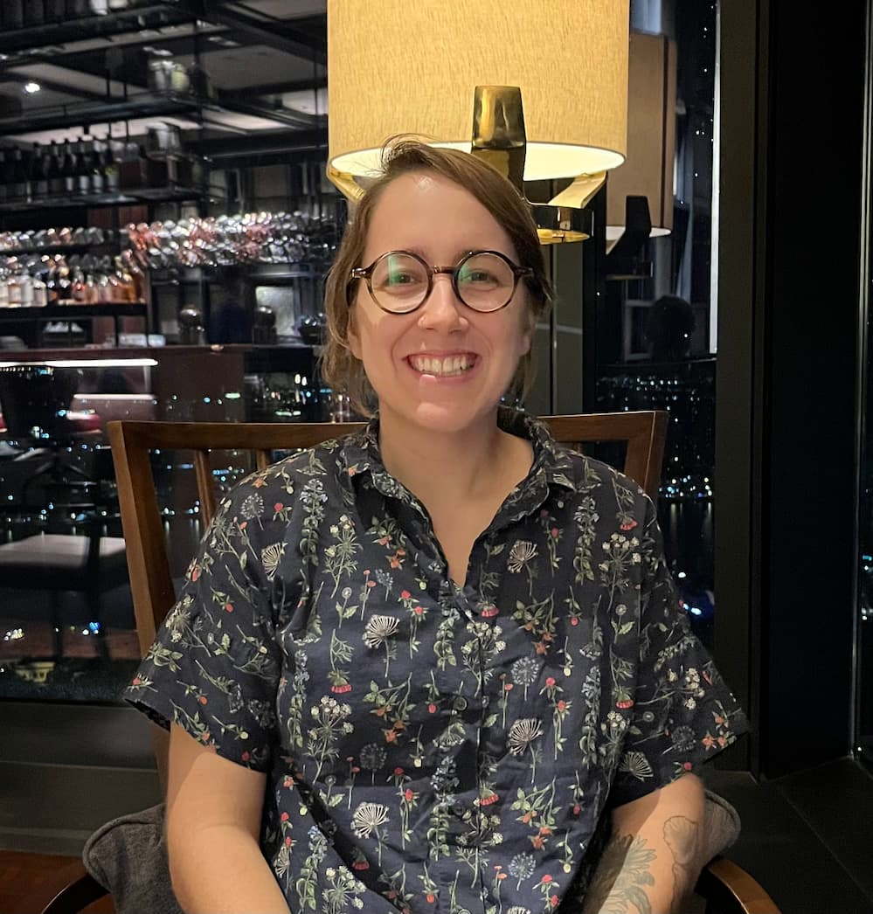

Dee Iannantuono (She/Her)
Hello! My name is Dee Iannantuono (Ya-nan-chaw-no). I’m a coffee-fueled, book-devouring, exercise enthusiast ready to (hopefully) conquer the tech world, or at the very least, enter the tech world! After school (a wee bit over 10 years ago now!), I dove headfirst into the realm of graphic design and completed study at Shillington College. However as fate would have it, I actually ended up working in admin at a school, where I have been rocking the data entry, paperwork and customer service like a boss for the past five years. Thankfully still using my graphic design skills to create banners, social media posts and all kinds of pretty documents. Add in a Bachelor of Behavioural Studies as well, because who doesn’t like to dip their toes in lots of baskets and get some sweet, sweet HECS debt… and here I am!
But now (Drum roll please), I am on a mission to break free from the administrative chains and embrace my techy side. Armed with my trusty laptop and a bucketful of determination, I am ready to code my way to greatness. Ok yes, this is actually me trying to convince myself that I can achieve greatness, when in fact, I am currently spiralling in a pit of self-doubt over the first project of She Codes.
Anyway, when I am not busy conquering pixels or conquering paperwork, you can find me nestled in a cozy coffee shop with a book in hand, to transport me to another world. And I like to balance this all out with some serious exercising to (obviously) keep my superpowers intact.
Thank you for getting this far (Really though, thank you).